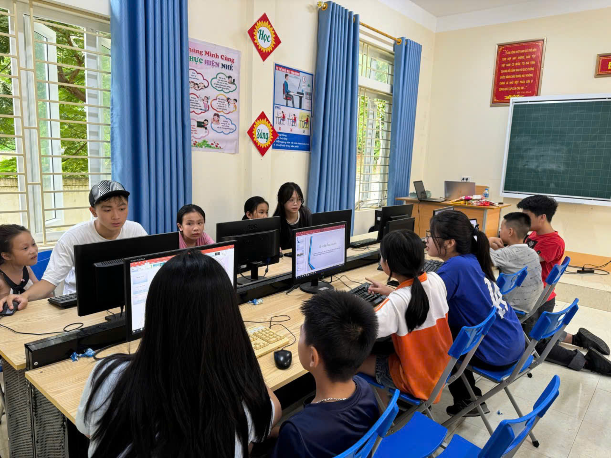
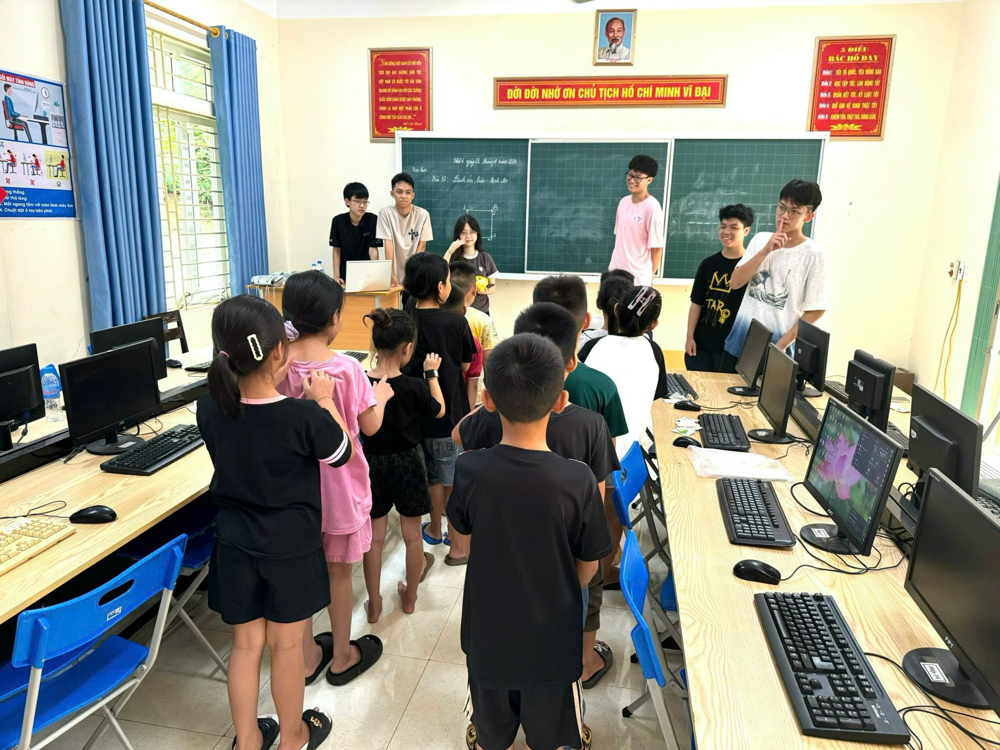
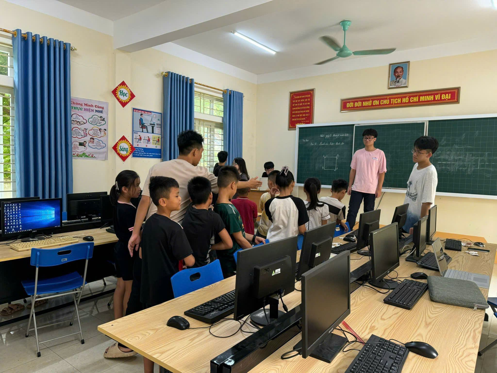
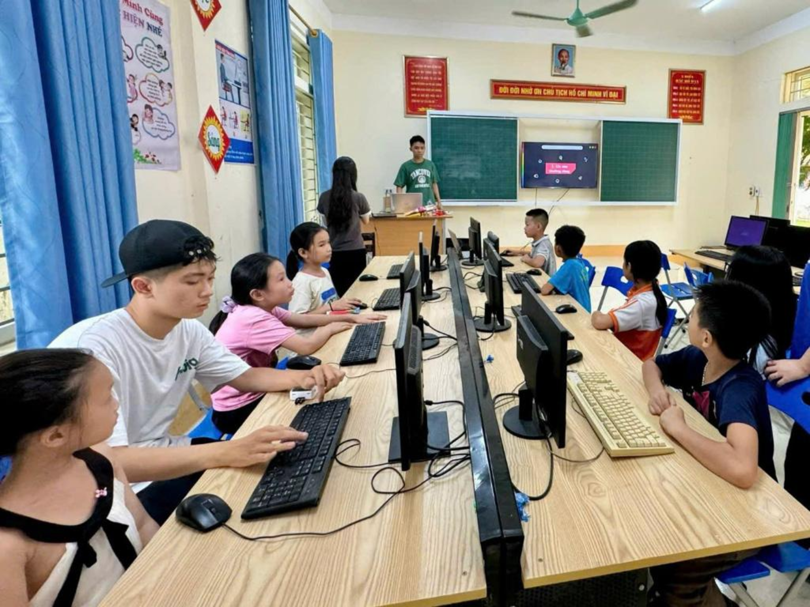
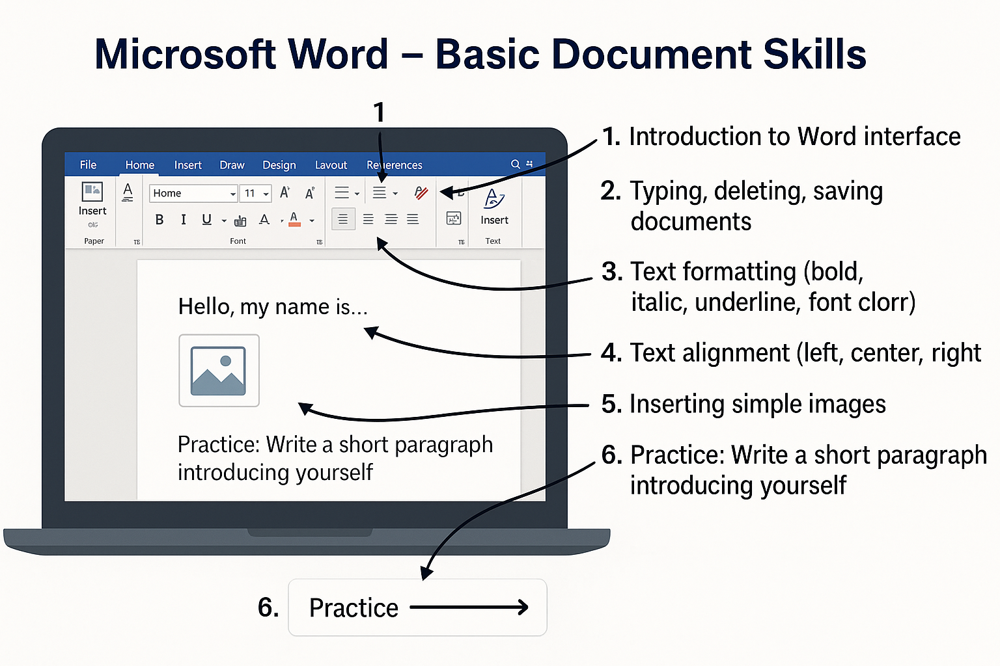
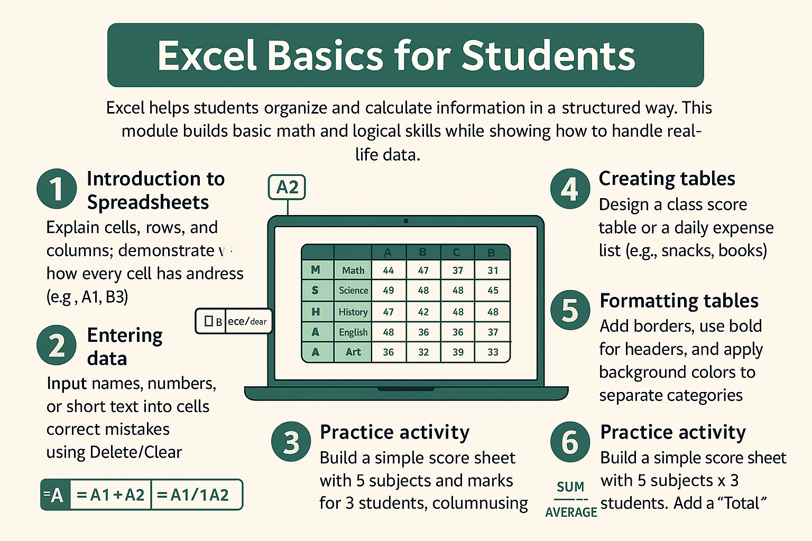
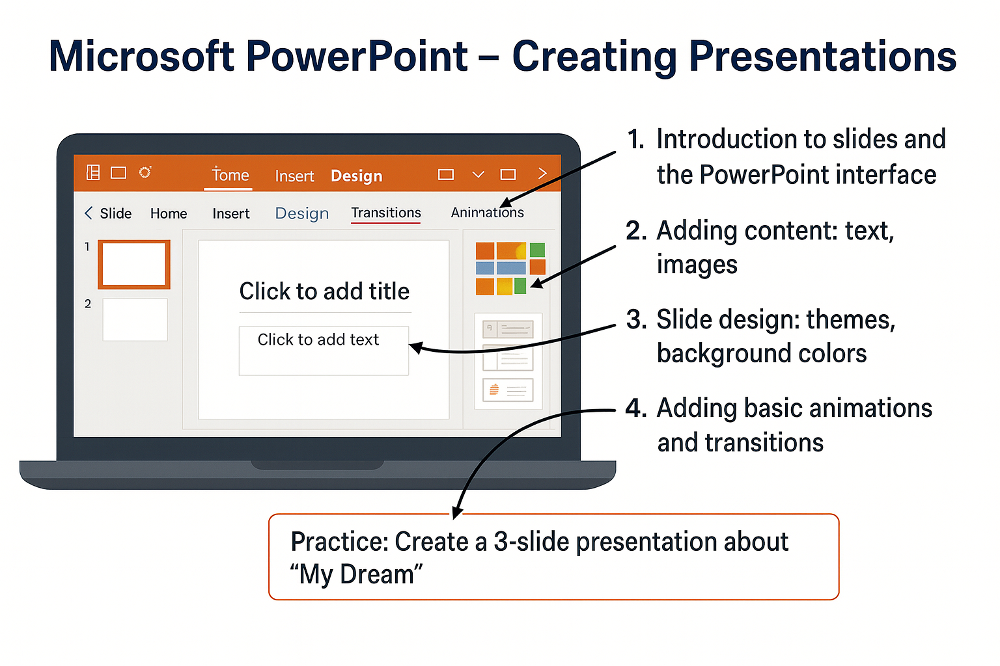
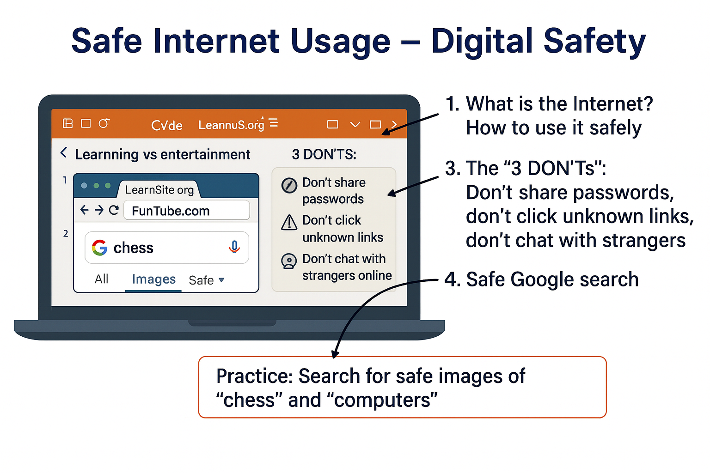

Beginner Computer Literacy Curriculum (2023)




- 1. Microsoft Word – Basic Document Skills
- Students will learn how to create, edit, and format documents step by step. This foundation helps them gain confidence in using a computer for schoolwork and personal writing.
- Introduction to the Word interface – identify the ribbon, toolbar, and workspace; explain what each main tab (Home, Insert, Layout) is for.
- Typing, deleting, saving documents – practice writing sentences, using Backspace/Delete, and saving files with proper names (e.g., MyName.docx).
- Text formatting – change font size and style, apply bold/italic/underline, use different colors to highlight key words.
- Text alignment – experiment with left, center, right alignment to make titles or lists look neat.
- Inserting images – learn how to insert a picture from the computer or online into a document.
- Practice activity: Write a short paragraph introducing yourself (name, age, favorite hobby) and format it with at least 3 styles, plus one image.

- 2. Microsoft Excel – Simple Data Handling
- Excel helps students organize and calculate information in a structured way. This module builds basic math and logical skills while showing how to handle real-life data.
- Introduction to spreadsheets – explain cells, rows, and columns; demonstrate how every cell has an address (e.g., A1, B3).
- Entering data – input names, numbers, or short text into cells; correct mistakes using delete/clear.
- Simple calculations – use =A1+A2, =A1-A2, =A1*A2, =A1/A2 for quick math.
- Creating tables – design a class score table or a daily expense list (e.g., snacks, books).
- Formatting tables – add borders, use bold for headers, and apply background colors to separate categories.
- Practice activity: Build a simple score sheet with 5 subjects and marks for 3 students. Add a “Total” and “Average” column using formulas.

- 3. Microsoft PowerPoint – Creating Presentations
- This lesson develops creativity and communication by teaching how to make slides that are clear, attractive, and engaging.
- Introduction to slides and the PowerPoint interface – learn how to add, delete, and arrange slides.
- Adding content – type text in title and content boxes; insert relevant images or clipart.
- Slide design – apply built-in themes, adjust background colors, and choose readable fonts.
- Animations and transitions – add entrance animations (fade, appear), use simple slide transitions; emphasize less is more.
- Practice activity: Create a 3-slide presentation about “My Dream.” Slide 1: Title with name. Slide 2: Picture of dream job/school. Slide 3: Why this dream matters. Add at least one animation per slide.

- 4. Safe Internet Usage – Digital Safety
- Children often go online without knowing the risks. This module equips them with the knowledge to stay safe and responsible while exploring the Internet.
- What is the Internet? – explain as a “worldwide library and playground” where we must be careful.
- Learning vs. entertainment websites – compare examples (e.g., Khan Academy vs. random gaming sites).
- The 3 DON’Ts – Don’t share personal info/passwords, don’t click unknown links/pop-ups, don’t talk to strangers in chat rooms.
- Safe Google search – use simple keywords (e.g., “chess kids” instead of “chess”), choose “Images – Tools – Usage Rights” for safe pictures.
- Practice activity: In pairs, search for safe images of “chess” and “computers,” then save and insert them into a Word file or PowerPoint slide.

Teaching method: Each session mixes theory with hands-on practice. Short, fun challenges like typing races, “find the right cell,” or slide design contests keep students motivated and help them remember skills more effectively.